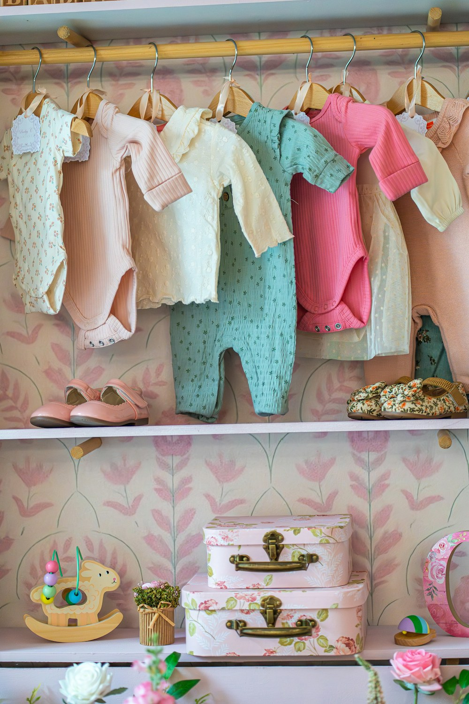
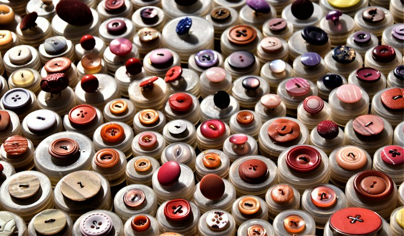

Breathable Natural Fabrics
We prioritise 100% combed cotton, airy double-gauze muslin, and linen blends that keep little ones cool during warm Pakistani afternoons.
We started Little Traits with a simple belief: everyday children’s clothing in Pakistan should be effortless for mothers to shop, breathable in our local weather, and soft enough for sensitive skin.

Too often, shopping for kids means choosing between stiff, overly decorated occasion clothes or basic tees that lose their shape after a few washes.
At Little Traits, we focus on a curated capsule of 10–15 seasonal pieces. By keeping our collection focused, we give every garment extra care—from pre-washing our combed Pakistani cottons to using smooth coconut-shell buttons and wide, pinch-free elastic waistbands.
We prioritise 100% combed cotton, airy double-gauze muslin, and linen blends that keep little ones cool during warm Pakistani afternoons.
Wide keyhole necklines, pull-on trousers, and nickel-free baby snaps mean faster morning routines and zero fuss during outfit changes.
French-finished inner seams and pre-shrunk weaves ensure each piece stays soft and durable enough to pass along to younger siblings.
Every shirt, frock, romper, and co-ord set in our debut collection shares a cohesive palette so siblings and everyday outfits coordinate naturally.
